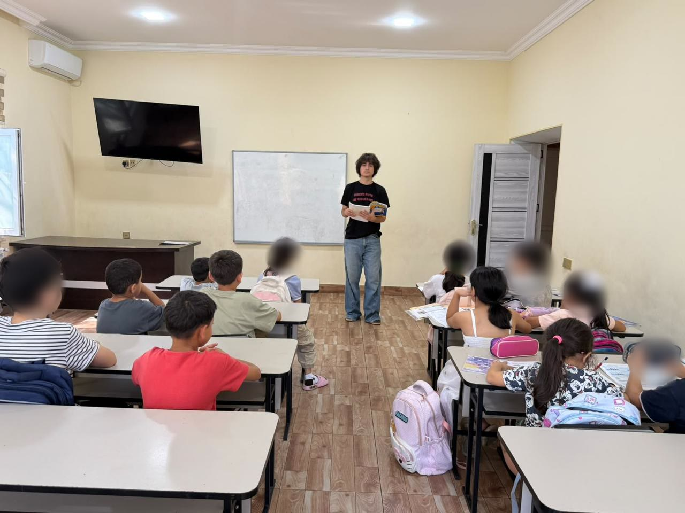
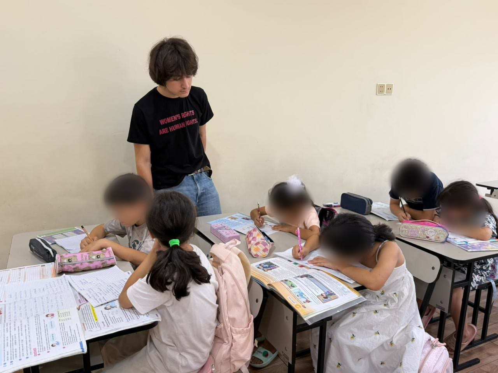
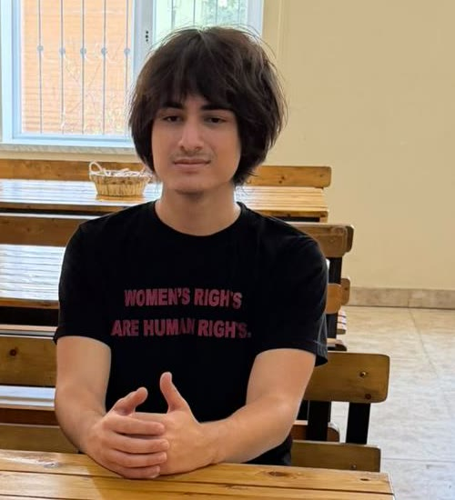
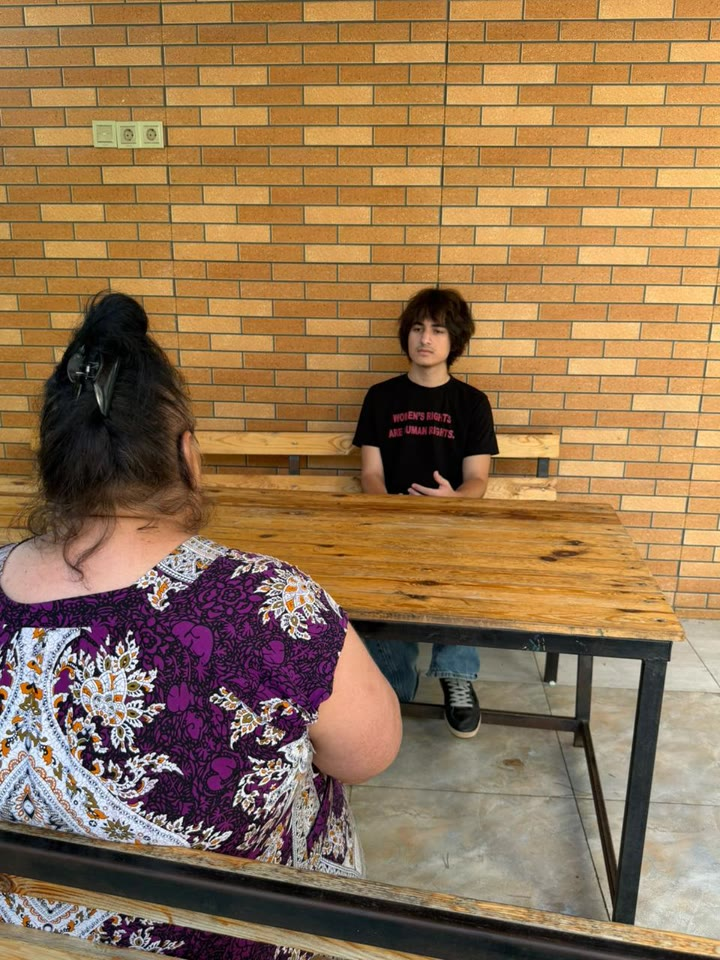
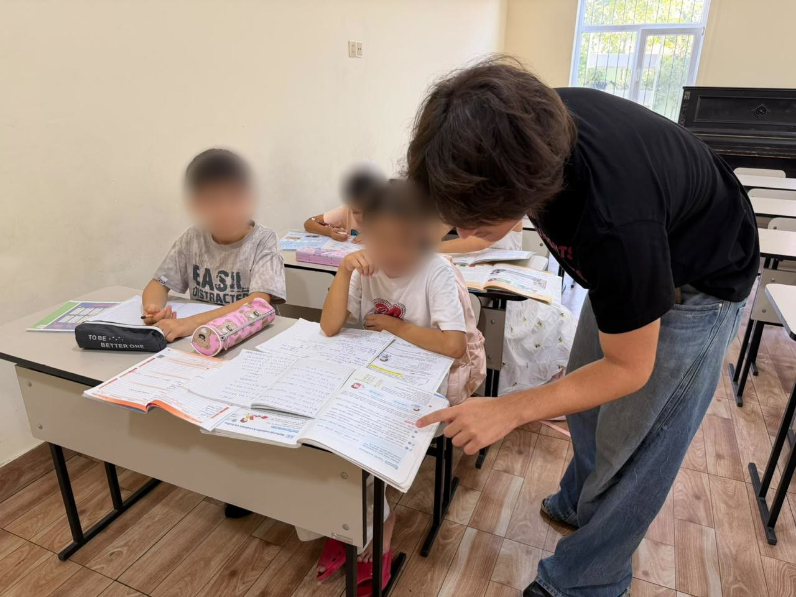

Volunteer service · Mehriban Women and Children Shelter · Azerbaijan
Three years at Mehriban
For three years, Jamal Naghizade has volunteered at Mehriban, a shelter for women and children who have survived domestic violence. The work began with sorting donated supplies. It grew into reviewing crisis information, preparing prevention materials, guiding new volunteers and representing the shelter in public.
- ≈500
- hours of service
- 3
- years, without a break
- 5
- roles, from supplies to mentoring
- COP29
- gender and climate programme, with national recognition

The setting
A shelter, and the unseen work that keeps it running
Mehriban gives women and their children somewhere safe to go after domestic violence, along with information about psychological support, legal consultation and emergency contacts.
Most of what a volunteer does there goes unnoticed: packing supplies, revising a leaflet, keeping track of what is still unfinished. In the words of the shelter's head, it is work that “attracted no public attention.” Three years of it is the subject of this site.
How the work grew
From sorting supplies to shaping how the shelter speaks
His responsibilities grew as the staff came to trust him. Select a stage.
He began with the practical. He prepared educational materials, sorted donated supplies, put together family support packages and helped with activities for the children who came to the shelter with their mothers.
- Educational materials
- Donated supplies
- Family support packages
- Lessons and homework help for children
He helped review what the shelter tells people about psychological support, legal consultation, emergency contacts and other services. He checked one thing above all: would the text still be clear to someone reading it in a crisis?
With guidance from staff, he helped prepare age-appropriate materials on personal boundaries, respectful relationships, coercive behaviour, and the difference between ordinary disagreement and control. He treated these subjects with care. He did not act as a counsellor or speak on behalf of survivors.
The shelter chose him to represent it in a women's support competition organized by Amorini Concept. Staff said they chose him because he could talk about women's rights without turning women into abstractions or casting himself as their rescuer.
His task, as he understood it, was to listen carefully, represent the shelter honestly, and explain how young men can challenge the attitudes that let coercion and violence become normal.
Over time, staff began relying on him to show new volunteers how materials were organized and how confidentiality should be protected. He kept track of unfinished tasks, raised recurring problems with staff, and revised his own proposals after feedback.
There was no single moment when he became a leader. It happened gradually.
Illustrative example
What “clear in a crisis” means
A short notice about where to get help, before and after a plain-language review. The wording is invented to show the approach. It is not the shelter's actual text.
Persons who have been subjected to domestic violence may apply for the provision of psychological and legal assistance services in accordance with the established procedure, upon submission of the relevant documents during official working hours.
You are not alone. You can talk to a psychologist or a lawyer, free of charge. You do not need any documents to ask for help. What you tell us stays confidential.
- The first line says help exists
- Short sentences and everyday words
- No barrier before the first step
- Says it is free and confidential
Prevention
Disagreement is not the same as control.
One distinction ran through the prevention materials he helped prepare: telling ordinary conflict apart from coercion. The examples below were written for this site to illustrate the idea.
Ordinary disagreement
- Both people can say no without being afraid.
- The argument is about the issue, not about who is in charge.
- Each person keeps their own friends, money and phone.
- Afterwards, either person can raise the subject again.
Control
- One person decides who the other may see.
- Messages, phone or location are checked.
- Money is withheld or used as pressure.
- One person changes how they act to avoid a reaction.
At the shelter
Lessons, homework and listening
Children's faces are blurred. Women staying at the shelter are shown only from behind.




The questions behind the work
Reading women's history, asking about the shelter
He has developed a serious interest in the anthropology of women: how women's labour, authority, freedom and social roles have been shaped across cultures and generations. He keeps bringing that reading back to questions raised by the shelter's work.
- Why do certain forms of control become normal?
- Why are survivors sometimes blamed for the harm done to them?
- Why are women's experiences so often interpreted by institutions, without women having equal authority to define those experiences themselves?
His interest is in women as thinkers, workers, leaders, caregivers, creators and historical actors, not as people waiting for protection.
From the shelter to COP29
Climate crises do not fall on everyone equally.
The shelter shaped how he approached COP29 in Baku. He took part in its gender and climate programming, bringing the view of a young Azerbaijani man already doing sustained work with women and children.
What he focused on: how environmental crises add to women's burdens through
- Displacement
- Economic insecurity
- Unequal caregiving responsibilities
- Reduced access to essential resources
He did not describe COP29 as a prestigious event he had attended. He described what he had learned: climate policy can overlook the unpaid labour, economic vulnerability, safety concerns and caregiving carried mostly by women. Then he took those questions back to the shelter.
In the shelter's words
From the letter of recommendation
Jamal does not merely complete an assignment. He notices where a system may fail the person it is intended to serve.
In our work, we rarely encounter teenage boys who are willing to identify openly as feminists, listen without defensiveness, and remain consistently involved in the difficult, largely invisible work of supporting women.
That is the kind of leadership I have seen in Jamal: useful, steady, and not dependent on recognition.
Jamal remained after the novelty had passed.
Zeynalova Mehriban Heydarali qizi Head, “Clean World” Aid to Women Social Union · 24 September 2026
Excerpts are quoted from the original English letter. The AZ and RU versions of this page show translations.
Organization
“Clean World” Aid to Women Social Union
«Təmiz Dünya» Qadınlara Yardım İctimai Birliyi
Runs the Mehriban Women and Children Shelter. To protect residents, the shelter's address is not published here.